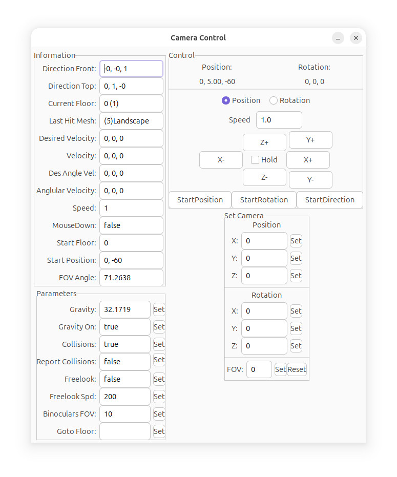

Camera Control
The Camera Control dialog shows the
internal camera parameters, and allows the user to control the
camera.
Skyscraper currently uses one camera by default, two cameras for
VR mode (one for each eye), and support for more cameras will come
in the future.

Current Floor shows the floor number the user is currently
on, followed by the floor ID.
Last Hit Mesh is the last mesh the camera's collider hit,
which is usually a floor or wall.
Start Floor is the floor the user started on, and the
position is right after it.
The FOV Angle determines the view angle of the camera,
decrease it for a wider view.
The Gravity parameter changes the Bullet physics engine's
gravity value, and Gravity On turns it on and off.
Collisions can be turned on and off using this, or by
pressing the "v" key in the simulator.
Goto Floor is a simple way to teleport to a different
floor/level.
On the right are the camera movement and rotation controls.
To move the camera over time, check the Hold checkbox and
then move the camera using the axis buttons.
The Set Camera section allows the user to manually set the
position and rotation of the camera.